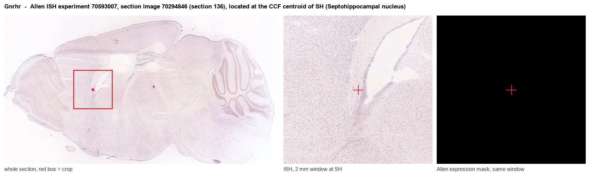
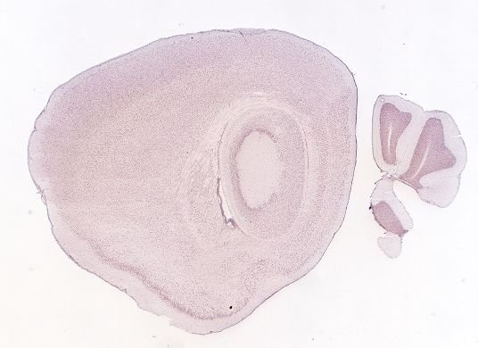
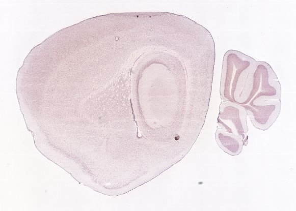
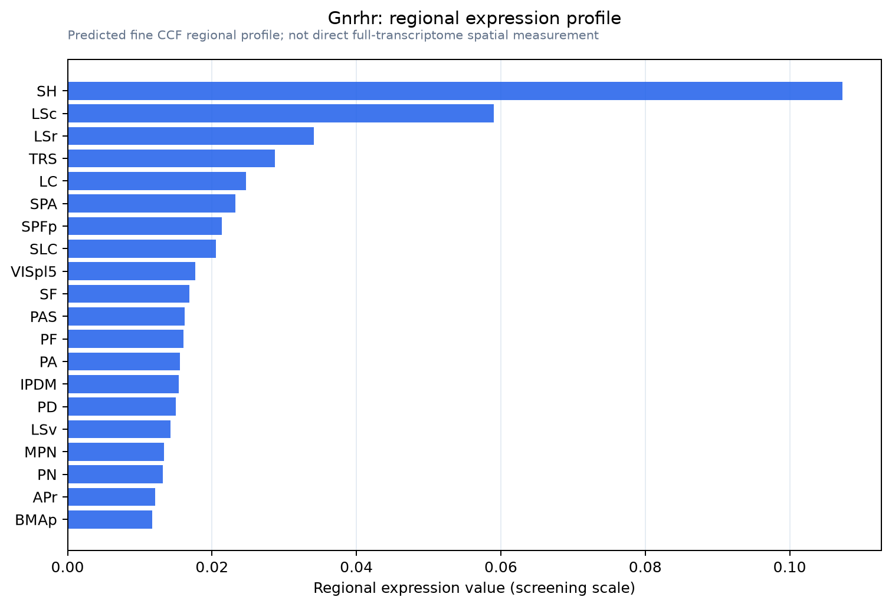

Gnrhr
Gonadotropin-releasing hormone receptor (GnRH receptor) (GnRH-R)
Spatial tier: STRICT_EXCLUSIVE · Class: GPCR · Top region: SH (Septohippocampal nucleus) · Positive regions: 4/554
48.6Discovery Score
38.6Targetability Score
CEvidence grade C
What this means: Gnrhr: predicted fine-region profile is strict-exclusive, with 4 positive regions out of 554 (limit 12); direct spatial validation is required.
Function in SH: evidence, prediction, innovation
- Gene function
- Gnrhr encodes the gonadotropin-releasing hormone receptor, a class-A GPCR coupling mainly to Gq/11 and mobilizing Ca2+ via phospholipase C. In pituitary gonadotropes it drives LH/FSH release, the master control point of reproduction, and it also sits on scattered forebrain neurons.
- Region function
- The septohippocampal nucleus lies in the midline septal complex between lateral and medial septum, receiving hippocampal and hypothalamic input and regulating theta rhythm and stress.
- Published in this region
- expression only Wen et al. (2011) used a GnRHR-IRES-Cre reporter to map GnRHR neurons to lateral septum and the diagonal band horizontal limb flanking the septohippocampal nucleus, plus preoptic area, arcuate nucleus, amygdala and hippocampus. Rat hippocampal Gnrhr appears after P16 with the lateral septum (Schang 2011), and functional signaling occurs in neonatal but not adult striatal cholinergic neurons (Farkas 2024). The nucleus itself has never been isolated.
- Predicted function
- Prediction: GnRHR on septal neurons projecting to hippocampus lets GnRH from preoptic fibres or hippocampal GnRH-II-like sources depolarize them through Gq, coupling reproductive state to theta rhythm. Chemogenetic activation of GnRHR-Cre septal neurons should raise hippocampal theta; septal Gnrhr deletion should blunt oestrous-cycle-dependent memory changes.
- Innovation
- ★★★★☆ 4/5 A Cre line and pharmacology exist, yet septal extra-hypothalamic GnRHR neurons have never been functionally manipulated.
- Tools
- GnRHR-IRES-Cre (GRIC) knock-in mouse (Wen 2011); agonists GnRH, buserelin, leuprolide; antagonists cetrorelix, ganirelix; Gnrhr knockout mice; sparse Allen ISH forebrain signal.
- References
Direct evidence located at the region

Allen ISH experiment 70593007, section image 70294846 (section 136): the section that contains the CCF centroid of Septohippocampal nucleus according to the Allen image-to-atlas alignment (reference_to_image), with a 2 mm window around that point. Left: whole section, red box = window. Middle: ISH signal. Right: Allen's expression-mask view of the same window. open this image in the Allen viewer
Look it up yourself: Allen Mouse Brain ISH for GnrhrAllen reference atlas: SH (structure 333)ABC Atlas MERFISH viewer(in the ABC Atlas choose dataset MERFISH-C57BL6J-638850-CCF, colour cells by gene "Gnrhr" or by parcellation_substructure "SH")All genes confined to SH + 3-D brain
Direct spatial evidence
MERFISH REGION LOCATOR

DIRECT ALLEN ISH

DIRECT ALLEN ISH

Regional expression figure

Predicted WMB × fine-CCF profile; not direct full-transcriptome spatial measurement.
Spatial profile
Evidence and specificity
- Evidence status
- PREDICTED_FINE
- Direct sources
- None; predicted localization only
- Exclusive threshold
- 12 positive regions out of 554
- Spatial specificity
- 0.394
- Top-region fraction
- 0.188
- Filter status
- PASS
Interpretation limits
- Cell-type-to-region projection is imputed expression, not direct spatial measurement.
- Adult reference atlases do not establish stability across age, sex, strain, state, or disease.
- Transcript abundance does not guarantee protein abundance or genetic-tool performance.